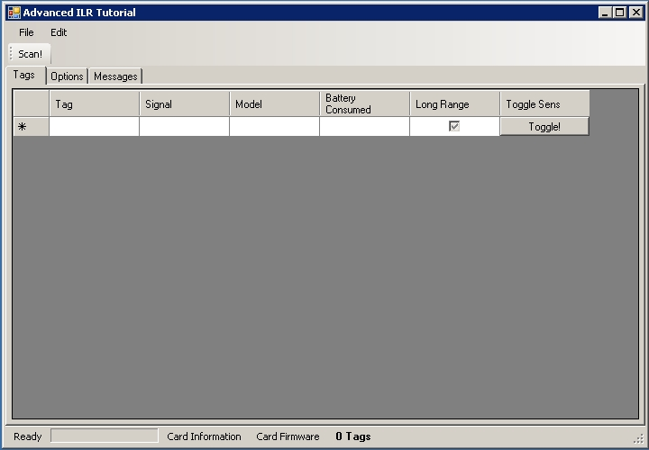

Advanced ILR® Tutorial For IDENTEC.NET (C#)
Version 1.10
By Chris Adamson
How to maximize performance and get the most out of ILR® technology using the Microsoft® .NET Framework.
Contents:
Background
To get the most out of this tutorial, it is strongly recommended
that you complete the Basic
ILR Tutorial first.
What you will need
One of the following development environments:
- Visual Studio 2005
- Visual C# Express 2005
Note that we will be using the DataGrid control which is not available
in .NET 1.1 so you will not be able
to follow this tutorial using anything previous to Visual Studio 2005.
All of our examples will be using
Visual Studio 2005, the express edition's screens may vary slightly.
ILR® Technology Covered:
And you will need a PC or laptop with at least one free PCMCIA slot and
the i-CARD 3 driver installed. Alternatively, an i-PORT 3 or i-CARD CF
could be used as they implement the same interface for working with i-Q
tags.
Introduction
This tutorial is designed to walk you through several important
concepts an ILR program should implement to maximize the capabilities
of ILR® Technology. When finished
this tutorial you will be familiar with the following ILR®
programming
concepts:
- Changing the number of expected tags during a scan
- Scanning multiple times to build a complete tag list
- The effect of blinking the tags during a scan
- Changing the RF power options to best suite your needs
- Maximizing and minimizing a read zone sizes
- Switching an i-Q tag's range mode
- Blinking a tag for pick-to-light applications
You will find that this tutorial will help you explore ILR®
technology by playing with the resulting application and all the
possible settings. The code presented here is specific to i-CARD 3 and
i-Q tags. However, switching to i-D2 tags or another reader would
require only minor code changes.
Starting The Project
Open this zip file
and extract the contents to a working folder. This solution will be our
starting point for the tutorial. Once you've extracted the code open
the solution, build and run it.

Querying the
i-CARD for Capabilities
You should check the card for it's maximum output capability and
minimum output so that you do not accidentally try and set the power
beyond these limits. If you do attempt to set the transmission power
beyond the bounds then an exception will be thrown.
You will want to note that the i-CARD
CF has a lesser output power than i-CARD 3.
Fill in the following code and then run the program again to see what
your card is set for:
private void MainForm_Load(object sender, EventArgs e)
{
try
{
m_iCard3.Connect();
// Hint: the current transmit power is set to maximum when the card connects
// so there is no point in trying to set the output power before connecting
DisplayCardInformation();
InitializeRFPowerGroupBox();
}
catch (Exception ex)
{
MessageBox.Show(ex.Message);
this.Close();
}
}
private void InitializeRFPowerGroupBox()
{
// This run-time check ensures that we don't go beyond the bounds
// of the power settings for the RF output
trackBarOutputPower.Maximum = m_iCard3.MaxOutputdBmIQ;
trackBarOutputPower.Minimum = m_iCard3.MinOutputdBm;
trackBarOutputPower.Value = m_iCard3.TxPowerIQ;
checkBoxRxBoost.Checked = m_iCard3.EnableReceiveBoost;
// Show the current output power the card is set to use:
textBoxCurrentOutput.Text = m_iCard3.TxPowerIQ + "dBm";
}
private void DisplayCardInformation()
{
// It's important to track the serial number and firmware information in your app:
toolStripStatusLabelCardInfo.Text = "Firmware Info: " + m_iCard3.Information;
toolStripStatusLabelCardSerialNumber.Text = "Serial #: " + m_iCard3.SerialNumber;
}
In the example screen shot you see that our max output is 6dBm and that
the firmware is version 2.9.
Side Note on
Regional Frequency:
We did not display the region that the i-CARD 3 is set to use by
default.
In most cases this is not important as your application will be dealing
only with tags set to work in your frequency region (916.5 MHz in North
America, 868MHz in Europe and most other regions). If you do require
the ability to use the card in multiple regions, you can switch the
working region from your application using the iCard3.Region property at any time
after a connection is established.
Now that we've hooked up all the controls we can start scanning. We
will look at the Scanning Options
and RF Settings in more
detail later.
Optimizing Scanning
Scanning is probably the most important process your application will
perform to detect and manage groups of tags. This is especially true if
your application is unaware of what tags are available in the read zone
through some other means (database record, bar code scan, etc).
There are a few things to consider when scanning:
- How many tags do we expect in the read zone?
- How much time to we have to detect all the tags?
- Is it a slow or static environment
- Do we need visual feedback during the scanning process for
personnel located within the read zone (blink enabled)?
- Do we need any information other than just the tag ID?
- Tag model
- Battery % consumed
- Tag mode (long range/normal range)
There is no one-setting-fits-all
that will magically work for every situation. By changing the various
parameters and observing the results you will understand what will work
for your solution.
Expected Tags
During the scanning process, the reader sends out a hint to the tags as
part of the scan request. The hint is the number of tags that the
reader will wait to respond. The hint informs the tags that there are x
number of time slots available for each tag to respond to the scan
request. For example, if the hint is that
16 tags are expected to respond then each of the tags will randomly
choose a slot in time allotted for 16 tags.
Here's an example diagram of a good
ratio of actual tags in the field
versus the expected tag settings. As you can see, 4 tags respond
comfortably within the allotted 16 time slots (16 expected tags).
But what happens when the expected tags is less than the actual number
of
tags responding? This will lead to collisions where two (or more) tags
attempt to
respond within the same time slot, that is, simultaneously. When
multiple tags respond within
the
same slot, neither tag's signal can be interpreted by the reader
(signal collision). Thus
tags that respond within the same slot are not detected. The diagram
below illustrates this:

Note that 16 time slots were available
and 25 tags were called upon to respond. Many collisions occurred and
only 8 tags were properly detected. Also note that one of the slots was
not chosen by any of the tags.
We recommend that
you set your expected tags to at least twice the number of actual tags
in the read zone so that there is enough opportunity for the tags to
each respond in a unique (non colliding) time slot.
Fill in the following code to enable scanning in the application:
private void ScanThreadProc()
{
// We'll use a stopwatch to help us time the code to get an idea of how long a scan takes.
Stopwatch s = new Stopwatch();
for (int i = 0; i < m_ScanRepeats; i++)
{
s.Reset();
s.Start();
// Note that there are two overloaded ScanForIQTags methods,
// one does not include blinking the tags
TagCollection tags = m_iCard3.ScanForIQTags(m_ExpectedTags, m_blinkOnScan);
s.Stop();
AddMessage("Scan took " + s.Elapsed.ToString() + " and detected " + tags.Count.ToString()
+ " tags with options: Expected Tags: " + m_ExpectedTags
+ ", Blink: " + m_blinkOnScan.ToString() + " and "
+ m_iCard3.TxPowerIQ.ToString() + "dBm output, Rx Boost: "
+ m_iCard3.EnableReceiveBoost.ToString());
DisplayTags(tags);
}
ScanFinished();
}
Run the program and start scanning. You'll see the total number of tags
detected in the status bar and one of the tab pages gives you messages
about the settings and results. The larger the expected tags, the more
time (and possibly) tags that are detected. It's a trade-off between
how long you can wait for one scan versus scanning several times in
succession in order to detect many tags.
The timing for scanning with blink disabled can be estimated as: 100ms
+
(Expected tags * 1.2ms/tag slot) + host-to-card-communications
overhead.
To Blink or Not To Blink
Sometimes it is useful to blink the tags during a scan for visual
feedback. We find this especially useful during installations to
determine the size of the read zone and to help us tune the read zone
to the appropriate size.
Under the hood, the SDK actually performs a scan and then pings each
tag in the list so that the tags blink. The blink is actually a
side-effect of pinging a tag.
Scanning alone only returns the tag's ID and the signal strength. Other
information such as tag model, tag range mode and battery consumed are
retrieved from a Ping (or any read/write operation), and so enabling
the blink option in the scan
command will Ping each tag scanned and return some information for each
tag.
You'll notice when you enable the blink on the scanning options tab of
the application, the scan will take longer than previously, and the
grid view will show all the missing tag information.
Now you
can click any of column headers to sort the tags accordingly!
At this point
you'll probably want to explore some of the code to see how we populate
the DataGridView with all the tag information.
Scanning
repetitively to build a unique tag list
One of the features in the options page of the application is to scan
several times in succession. We encourage you to increase the Repeats to see how many scans it
takes to detect all the tags in the read zone. Vary the expected tags
and explore what settings make sense for your solution. You'll find
that even with a small number of expected tags, given enough scans you
will detect all the tags in the read zone even if the number of actual
tags is much greater than the expected tags.
Keep in mind that we are creating a unique list of tags via the DataSet
in the application. This is purely for example purposes and allows us
to quickly display the results in the DataGridView
easily.
RF Settings and Scanning
Tuning the RF settings is extremely important when you need to size
the read zone (either to small or to large). You have a great degree of
control over the power settings both on the transmission side of the
reader and the receive side of the reader (remember there are two paths
of communications between tags and readers).
On the transmission side of the reader we can set the power in
increments of 1 dBm. Typically the maximum output for an i-CARD 3 is
6dBm but it may be less in your region. This is why it is best to query
the card's MaxOutputdBmIQ property.
Find out more about dBm on Wikipedia here.
Here's a table summarizing typical dBm values you may encounter:
dBm Level
|
Power
|
Notes
|
80 dBm
|
100000 W |
- Common for FM radio stations
|
60 dBm
|
1000 W
|
|
40 dBm
|
10 W
|
|
30 dBm
|
1 W
|
- Typical leakage from a 1000 Watt Microwave Oven
|
27 dBm
|
500 mW
|
- Maximum transmission power for i-CARD 3 with i-D2 tags
- Cell phone transmission power
|
24 dBm
|
250 mW
|
- Maximum transmission power for i-PORT 3 with i-D2 tags
|
20 dBm
|
100 mW
|
|
10 dBm
|
10 mW
|
|
6 dBm
|
4 mW
|
- Maximum transmission power for i-CARD 3 and i-PORT 3
with i-Q tags
|
3 dBm
|
2 mW
|
|
0 dBm
|
1 mW
|
- Maximum transmission power for i-CARD CF (i-Q Tags)
- 0 dBm called the reference point (1 mW)
|
-5 dBm
|
0.32 mW
|
|
-10 dBm
|
0.1 mW
|
|
It is very
important to note that the antenna choice affects actual transmission
patterns and therefore distances, however in general the greater the
transmission power the further you can communicate over RF.
Now hook up the controls so you can change the power settings:
private void trackBarOutputPower_ValueChanged(object sender, EventArgs e)
{
// We shouldn't have to do any try/catch here as we've already
// queried the card and set the control within the allowed bounds
m_iCard3.TxPowerIQ = (int)trackBarOutputPower.Value;
textBoxCurrentOutput.Text = m_iCard3.TxPowerIQ.ToString() + "dBm";
}
private void checkBoxRxBoost_CheckedChanged(object sender, EventArgs e)
{
m_iCard3.EnableReceiveBoost = checkBoxRxBoost.Checked;
}
The receive boost enables/disables the hearing aid on the card (actually
the receive amplifier). That is, with it enabled, the card can hear (receive and decode) signals
as weak as -90dBm, but with it off the card only decodes signals
greater than -60dBm. Typically we leave this enabled at all times
unless you are working with tags at very close distances (less than 10
feet).
You may want to do some more experimenting at this point. Keep in mind
that there are two communication paths between the tag and the reader:
- The Reader to tag request
- The tag to reader response
You cannot control the transmission power of the i-Q tag itself, but
you can switch it into long range mode if you want to maximize the
reading distance.
Long Range and
Normal Range i-Q Tags
i-Q tags have the ability to turn on their own hearing aid to allow them to decode
weaker signals (and thus increasing the range at which they can decode
a request). When an i-Q tag is in long range mode, it is far more
sensitive to signals from readers and sometimes is too sensitive when
the tag is too close to a reader's antenna. In such cases, the tag will
be unable to hear the request from the reader because the signal is
blasting from the reader's antenna. Think of it as someone yelling in
your ear so loud that you can't understand what they are saying.
To switch an i-Q tag's mode, we will do so via the GridViewControl's
toggle button column:
private void dataGridViewTags_CellClick(object sender, DataGridViewCellEventArgs e)
{
try
{
if (e.RowIndex < 0) //Check for the header being clicked
{
}
else
{
DataRowView v = dataGridViewTags.CurrentRow.DataBoundItem as DataRowView;
if (v != null)
{
DataSetTags.DataTableTagsRow row = v.Row as DataSetTags.DataTableTagsRow;
if (row != null)
{
//Get Tag ID:
iQTag t = new iQTag();
t.Label = row.SerialNumber;
//Get Current sens:
if (row.IsLongRangeEnabledNull() || e.ColumnIndex != ColumnToggleSens.Index)
{
//Ping tag to confirm sensitivity status
if (m_iCard3.PingTag(t))
{
// we'll only update the user interface in this case
UpdateTagRow(row, t);
}
else
{
AddMessage("Could not ping tag " + t.Label + ". Device error code: " + m_iCard3.DeviceStatus.ToString());
}
}
else //We'll switch the sens:
{
if (m_iCard3.SetTagRangeState(t, !row.LongRangeEnabled))
{
UpdateTagRow(row, t);
}
else
{
AddMessage("Could not toggle tag range mode for tag" + t.Label + ". Device error code: " + m_iCard3.DeviceStatus.ToString());
}
}
}
}
}
}
catch (Exception ex)
{
MessageBox.Show(ex.Message);
}
}
You should be able to switch tags range mode easily now. However, you
may find it more difficult to switch tags that are close to the
reader's antenna from long range mode into normal range mode. Try
fiddling with the transmission power of the i-CARD to get the best
results.
Be aware that the i-Q series of tags
can be switched to and from long range mode at run time whereas the
i-D2 series of tags is permanently set during production.
Pick-to-light: The
Tag multi-blink process
One of the features of the i-Q tag is it's bright LED. You've already
seen that it blinks as a side effect of the Ping command. But what if
you need to blink the tag many times over without dedicating the i-CARD
to performing continuous Ping operations? The solution is the MultiBlink command!
To enable this we'll need to add two controls to the ToolStrip control
at the top of the main window. Add a TextBox and a button for blinking
the selected tag. Double click the button to create the event handler:
private void toolStripButtonMultiBlink_Click(object sender, EventArgs e)
{
// To be safe we don't want to allow two threads accessing the card at once:
if (!toolStripButtonStartScan.Enabled)
return;
// We'll keep a collection of the tags that succeeded in blinking
TagCollection tags = new TagCollection();
foreach (DataGridViewRow viewRow in dataGridViewTags.SelectedRows)
{
if (viewRow.Index > 0)
{
string tagLabel = viewRow.Cells[0].Value.ToString();
iQTag tag = new iQTag();
tag.Label = tagLabel;
// The blink command is very much like the Ping command.
// Although it is i-Q tag specific
if (m_iCard3.BlinkTag(tag, int.Parse(toolStripTextBoxBlinkCount.Text)))
{
AddMessage(tagLabel + " now blinking.");
tags.Add(tag);
}
else
{
AddMessage(tagLabel + " failed to blink. Device code: "
+ m_iCard3.DeviceStatus.ToString());
}
}
}
// Tags that succeeded are updated in the display
DisplayTags(tags);
}
By selecting one or more rows, you can set the tags into a multi-blink
state. Light the place up like a Christmas tree!
Be aware that the i-Q series of tags
implement the multi-blink functionality whereas the
i-D2 series of tags do not.
Finishing Touches
Wouldn't it be nice to save our results to a file and be able to load
them into another program such as Microsoft Excel? It's easy! All we
have to do is call myTagsDataset.WriteXml();
and supply a filename.
Conclusion
The application presented in this tutorial allows you to explore many
of the possible configurations with ILR Technology.
Bonus Exercises
- Add the ability to change the transmission power of the i-CARD
during each scan (hint, use the for loop in the scanning repeats and
change the output power of the card).
- Export the detected tags to an xml file (hint, see the comment in
the Finishing Touches section above).
- Ping each tag in the DataGridView upon a cell click
- Add Support for i-D2 tags
- Ping the entire collection of tags detected only after all the
scan repeats have completed and report the status of each ping in the
message tab instead of enabling the blink in the scan command.
- Add a retry scheme for switching tag range & blinking the
tags such that retries are attempted at various transmission settings
of the i-CARD 3.
- Add proper exception handling for the various calls to the iCard3 class.
Contact Us
How did we do? Did you find this tutorial useful?
We are always looking for feedback to help provide you
with the best documentation to improve your programming experience. If
you have any questions or comments send us an email at support@identecsolutions.com
History
Version 1.10 October 31, 2006
- Reworked the toggling of the tag sensitivity by adding a button
to the grid control
- Added more boilerplate code to speed up tutorial completion time
- All fields are now read-only
Version 1.04 May 29, 2006
- Minor bug fix in casting a bool in dataGridViewTags_CellEndEdit()
Version 1.03 May 23, 2006
- Made some comments about i-D2 tags
- Minor wording changes as per Dave Heath suggestions
Version 1.02 May 19, 2006
- Disclaimer added
- Some rewording
Version 1.01 May 18, 2006
Version 1.0 May 17, 2006